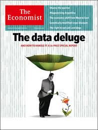

| Date | Time | Room | Topic |
|---|---|---|---|
| 20.4. | 13:45—17:00 | MT 127 | Seminar overview, introduction to programming language R |
| 27.4. | 13:45—17:00 | MT 127 | Reproducible research, knitr |
| 11.5. | 13:45—17:00 | MT 127 | Descriptive data analysis, ggplot |
| 18.5. | 13:45—17:00 | MT 127 | Statistical inference |
| 1.6. | 13:45—17:00 | MT 127 | Regression models |
| 8.6. | 13:45—17:00 | MT 127 | Team Presentations |
Quantitative Methods
Introduction
Peter Putz
Institute for Management
Course Schedule
Recommended Reading
David Diez, Cristopher Barr, and Mine Çetinkaya-Rundel (2014). Introductory Statistics with Randomization and Simulation. First Edition. CreateSpace Independent Publishing Platform.
A free PDF version is available at www.openintro.org.Nina Zumel and John Mount (2014). Practical Data Science with R. Manning Publications Company.
Pervez N. Ghauri and Kjell Grønhaug (2010). Research Methods in Business Studies. 4th Edition. Financial Times Prentice Hall.
Some copies are available in the JKU library.Alternatively, for German speakers:
Johannes M. Lehner and Alois Farthofer (2012). Evidenzbasiertes Management. Methoden und Kompetenzen der Organisationsanalyse. Mit einführenden Beispielen zu R, Mathematica und SPSS. Wien: Linde Verlag.
Motivation for this Course
Why data science?

Why data science?
http://www.mckinsey.com/insights/business_technology/big_data_the_next_frontier_for_innovation
Why statistical data science?

http://www.nytimes.com/2009/08/06/technology/06stats.html?_r=0
Why R?

http://www.nytimes.com/2009/01/07/technology/business-computing/07program.html?pagewanted=all
Why R?
- It is free
- It has a comprehensive set of packages
- Data access
- Data cleaning
- Analysis
- Data reporting
- It has one of the best development environments - Rstudio http://www.rstudio.com/
- It has an amazing ecosystem of developers
- Packages are easy to install and "play nicely together"
Who is a data scientist?

Who is a data scientist?

Who is a data scientist?

Who is a data scientist?

What is Data Science?

Sample Plot
year <- 2006:2015; sales <- (1:10)^1.8
plot(year, sales, "l", col="red")

Reproducible Research
Descriptive Data Analysis
Statistical Inference
Regression Analysis
References
\[\frac{-b \pm \sqrt{b^2 - 4 a c}}{2a}\]